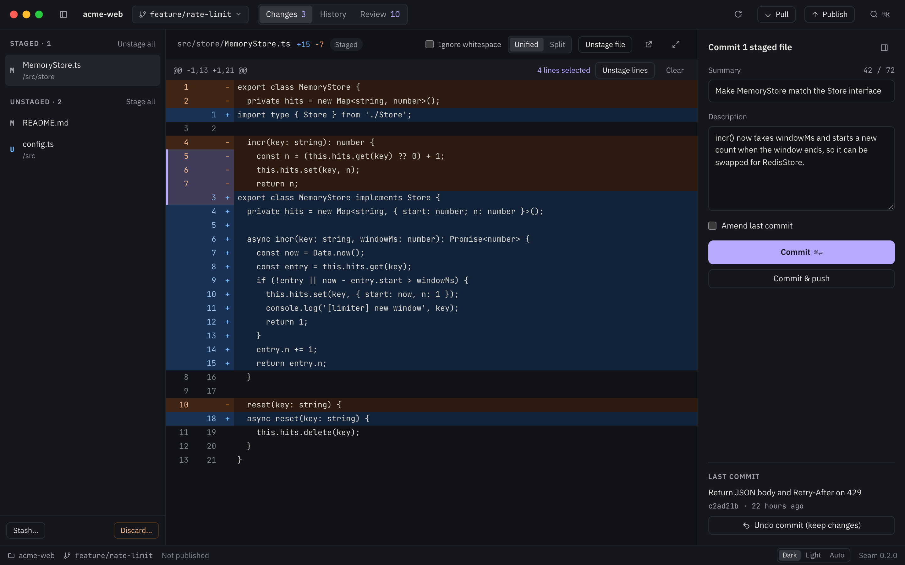
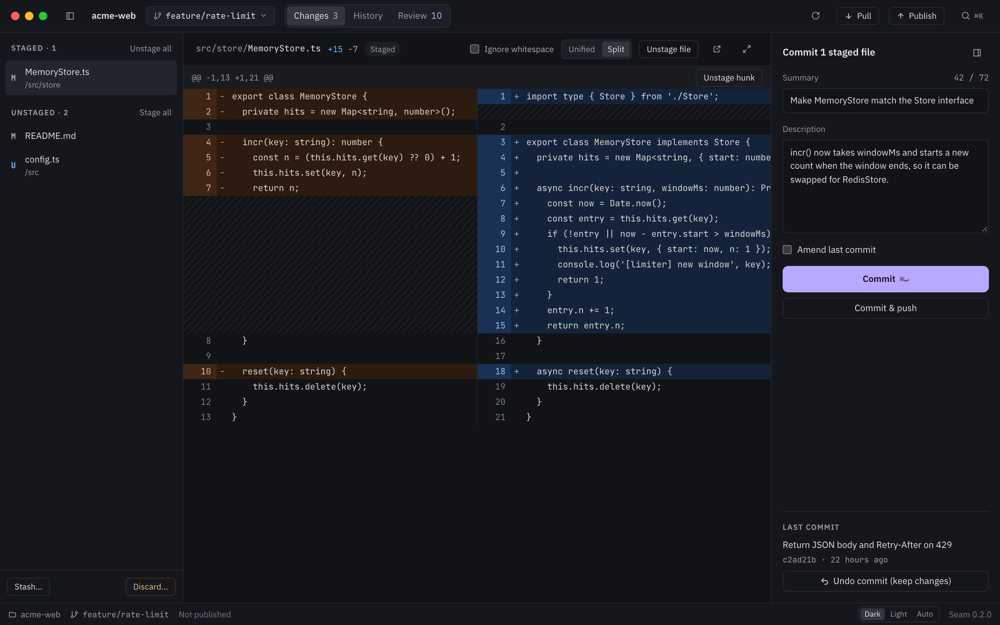
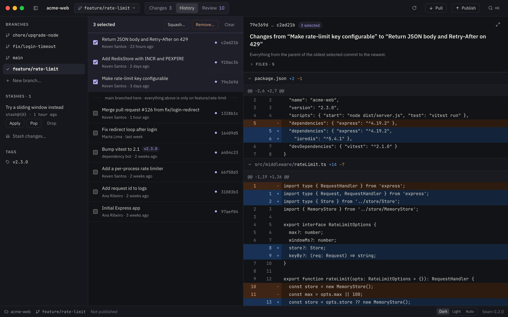
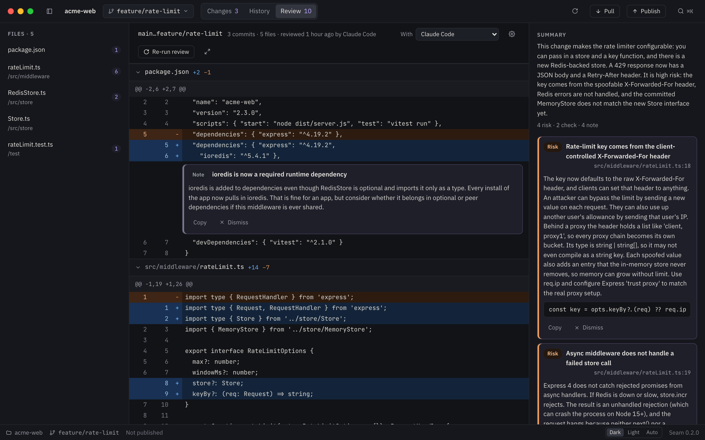
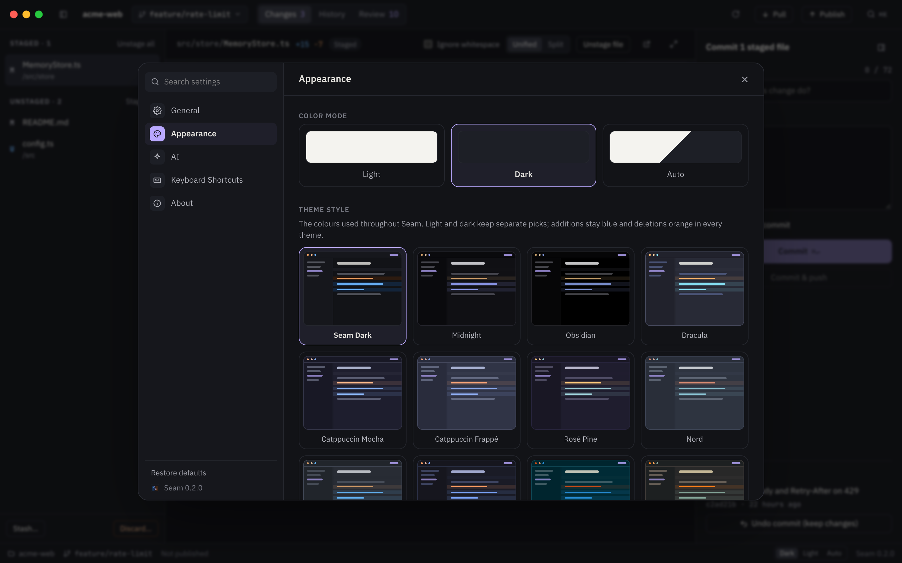
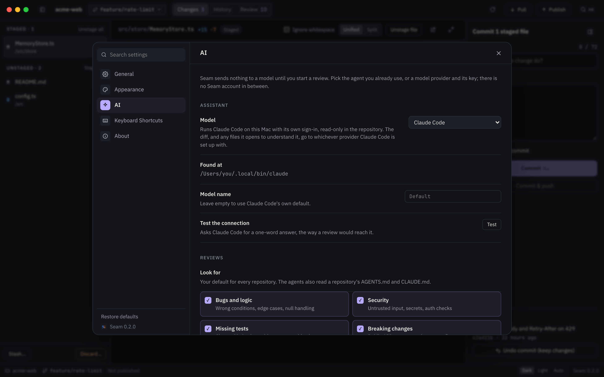

+ stage a line − undo anything
Everyday git, undoable.
Seam is a native git client for macOS. Stage single lines, rewrite any commit and press ⌘Z when you change your mind. Before you merge, the AI you already use reviews the branch and leaves comments on the lines that need a look.
Free and open source. For Apple silicon and Intel Macs.

Stage exactly what you mean.
Click a line number to pick a line, shift-click for a range, and stage, unstage or discard just those. Seam runs the git already on your Mac, so your hooks, config and credentials behave the way they do in Terminal.

Rewrite history without the fear.
⌘-click commits to see what they change together, then squash, remove or cherry-pick them. Rename any commit, revert it, or reset the branch to it. Every one of those can be undone with ⌘Z, and Seam tells you when a commit is already on the remote.

A review before you merge.
Seam hands the branch to the coding agent you already use, signed in as you, or to a model provider under your own key. Comments land on the lines they are about, sorted into risks, checks and notes. You choose what it looks for and how picky it is.
- Claude Code
- Codex
- OpenCode
- Anthropic
- OpenAI
- Google Gemini
- Ollama and LM Studio

Make it yours.
Eighteen themes with separate picks for light and dark, an accent of your own, and the model that reviews your code: an agent you already use, or a provider and key you choose. Additions stay blue and deletions orange in every theme.


Your git, not ours
Every action runs the git you already have. Nothing is reimplemented and nothing is hidden.
Nothing leaves without you
No account and no telemetry. Code only goes to a model when you start a review, and keys stay in the macOS Keychain.
Always there
Seam lives in the menu bar, with your recent repositories and a review of the current branch one click away.